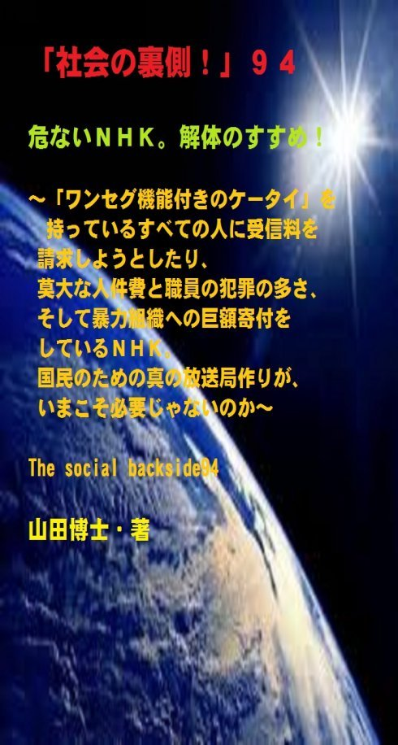

| 「社会の裏側！」９４......危ないＮＨＫ。解体のすすめ！: 「ワンセグ機能付きのケータイ」を持っているすべての人に受信料を請求しようとしたり、莫大な人件費と職員の犯罪の多さ、そして暴力組織への巨額寄付をしているＮＨＫ。国民のための真の放送局作りが、いまこそ必要じゃないのか | |
| 山田博士 | |
| kominitesyuppankai (2018) | |

■「社会の裏側！」９４
危ないＮＨＫ。解体のすすめ！
～「ワンセグ機能付きのケータイ」を持っているすべての人に受信料を請求しようとしたり、莫大な人件費と職員の犯罪の多さ、そして暴力組織への巨額寄付をしているＮＨＫ。国民のための真の放送局作りが、いまこそ必要じゃないのか～
The social backside94
山田博士・著
★本書の著作権について
皆さんにはまったく関係ないことだと思いますが、複写、転送、抜粋、転載など、著作権侵害にあたる行為は絶対になさらないで下さい。本書の著作権は、山田博士にあります。今後、皆さんのお役に立ちたい活動が出来なくなりますので、その点、ぜひよろしくお願いします。ささささ、それでは、本書をどうぞ、ごゆっくりご覧下さい。
★概要
多くの人にとってのＮＨＫとは、受信料問題でしょうね。
なにしろ、それでなくても、毎月の末になりますと、ギリギリとなる家計費ですから、頭が痛いものです(笑)。
そのため、「ＮＨＫの受信料は、本当に払わなくてはならないの？」と、悩んでいるかたも多いと思います。
ここに、一つの法律があります。
そう、放送法。
その「６４条１項」に、「協会（ＮＨＫのこと）の放送を受信することのできる受信設備を設置した者」に対し、ＮＨＫと受信契約を結ぶことを義務付けているんですね。
ただ、このＮＨＫの受信料については、「実質的に義務」だとは言え、税金や罰金とは異なって、これを支払わないために違法者の扱いを受けるというものではないんです。
そして、この「設置」という言葉をどう解釈するかが、いま各地で裁判沙汰にまでなっているわけですね。
しかも、ＮＨＫ会長が、国会答弁で、つい口を滑（すべ）らしております(笑)。
まあ、詳しくは本書をご覧下さい。
でも、問題は、けっして、受信料だけじゃない。
ぼくは、一度、このＮＨＫは完全に「解体すべきじゃないか」と思っております。
けっしてこれは過激な話でも何でもなく、間違った組織なら、ゼロから再スタートするべきじゃないかと思っているからです。
★★★
なぜか、このＮＨＫという報道機関は、戦後ずっと、日本人や日本を「おとしめよう」としてきたんですね。
多くのかたは、本当に？ と、思われることでしょう。
誰でも、まさか、自分の国を卑（いや）しめようという報道機関などあるはずがないと思っています。
外国のどこの国を見ても、そんなところはありませんからね。
ところが、戦後のゴタゴタのあったときから、とくにこのＮＨＫは、日本人のための報道をすることをせず、なぜか、いつも「大陸や半島の国々の存在ばかり」気にするようになりました。
ウソだとお思いなら、今日のニュースから、そのように意識してＮＨＫのニュースを聞いてご覧なさい。
とくに、ほかの放送局と比較するとよく分かります。
大陸関係だと、「都合の悪い内容」だと、まったく報道しないものも多々あります。
いったい、国民の税金という予算をもらっておきながら、こんな報道機関が世界に二つとありますか。
どんな国でも、自分の国には誇りを持っています。
たとえいまが敗戦という事態であったとしても、自分たちの民族や文化、伝統を子孫たちに遺（のこ）して行こうと考えるものなんですね。
そうでなければ、人間の歴史は続いていきません。
そして、自分の国の文化や慣習、自然を大切にしなければ、本当の意味で日本は滅んでしまうことになります。
★★★
なのに、近隣のそれらの国の人たちが日本国内で犯罪を犯しても、本名で報道しない。
ＮＨＫや放送局の内部にそれらの国の人が多いため、犯罪を犯しても、いつも通名（つうめい。日本名）で報道するわけですね。
少しでも大陸の人間が悪いことをしたことを隠そうとするわけです。
いったい、なぜ？
ぼくたち日本人は、それらの報道を見て、「ああまた日本人が、そんな凶悪なことをしたのか......」と思ってしまうじゃありませんか。
うつむいてしまいます。
でも、調べてみますと、戦後......いや最近起こった有名な凶悪事件は、かなりの割合で日本人名の朝鮮人や中国人たちが犯した例が多いんですね。
とくに「朝鮮人の犯罪」がグンを抜いています。
まあ、それらも本書では、具体的な名前まで挙げて、お知らせしておきました。
ぜひ、ご覧下さい。
なぜ、こうした人物はいつも「日本人名」になっているのか。
ほかの国の外国人は、みな「その国の名前」で、しっかり報道されていますのにね。
不思議でしょ。
★★★
まあ、そのほかにも、さまざまな黒い霧が、このＮＨＫにはあります。
あれだけ暴力沙汰（ざた）が問題になっても、いまだ、この「危ない日本相撲協会」と縁が切れないＮＨＫ。
これはあまり知られていませんが、「向こう正面席」に暴力団関係者が座っていることが多いんですね。
いったい、それらの理由はどこにあるのか。
なぜなのか。
もの凄（すご）いお金が動いているのですが、それらについても、詳しく述べておきました。
こんなことが白昼、まかり通っている事実に、驚きます。
けっして、ＮＨＫの「深夜便」の内容に騙（だま）されてはいけないんです（あ、ぼくは、この「深夜便」だけは大好きですので。笑）。
でも、このような現実が起こっていることについては、ぼくたちはもっともっと声を挙げなくてはならない。
そして、大切な公的電波を、もっともっと「日本国民のために」使うよう、ぼくたちは動かなくてはならないでしょうね。
ぼくは、国民みずからで、みずからの放送局を作りたいものだと、以前から思っています。
それらについても、本書の一番最後部で、少し述べておきました。
よかったら、協力して下さい(笑)。
ささささ、どうぞ、本書をご覧下さい。
★目次
★（第１章）
きっと、ＮＨＫの会長以下すべての職員たちが、いよいよ国民のほうを向かなくなったということの現れなのでしょうね。それなら、一層のこと、はっきりと、ＮＨＫは国民のほうを向いてはおりません。いつも政府の言うとおりを「オウム返しに」報道しております......と叫んでもらえれば、コトは簡単です(笑)......
★（第２章）
多くの人が一番に悩んでいらっしゃるのは、「ＮＨＫの受信料は、本当に払わなくてはならないの？」......でしょうね。あの不用意発言で人気を集めたＮＨＫ会長の籾井勝人（もみい・かつと）氏が、２０１５年３月５日の衆議院総務委員会でこう答弁しております......
★（第３章）
ＮＨＫが、近隣の中国人や朝鮮人たちが日本国内で犯罪を犯しても、けっして本名で報道しない理由とは。そして、受信料の支払い率を粉飾さえしていることが明かになったいま、再度、日本人のための報道機関にするべく、一度、解体するべきじゃないのか......
★（第４章）
「ワンセグ機能付きのケータイ」を持っていても受信料は払わなくてもいい......という、地裁のこうした判決が出ています。ＮＨＫは控訴するようですが、これって、どう考えても滑稽ですよね......
★（第５章）
こうした「危ない日本相撲協会」と、いまなおＮＨＫが縁を切れない理由は、ＮＨＫが、その日本相撲協会に毎年３０億円もの放送権料（裏金）を支払っているからなんですね。そして、その一部が暴力団に流れて行っている......。
★（第６章）
もし、すでに契約されているかたは、こうされるといいでしょうね。いい方法を述べておきます。ただ、最初から解約しようとしても、向こうは応じることはしませんから、この方法が一番かなと。また、ぼくはこのような内容の新しい「放送局」を作りたいものだなとも考えておりますが、ふふふ、いかがです......
★「社会の裏側！」シリーズの既刊本案内
★プロフィール
（最初に、恥ずかしながら、ぼくの紹介を簡単に述べておきます）
やまだ・ひろし。
１９４７年、福井県小浜（おばま）市生まれ。
食生態学者。元大学名誉教授。日本危機管理学会会員。
山田博士いのち研究所主宰。
ベトナム戦争の終わったちょうどその年１９７５年に、マンガストーリィと商品の実名で食べものや環境を取り上げた小冊子「暮しの赤信号」を発行する。実名で取り上げたため、社会に衝撃を与えた。各号１０万部単位で読まれ、隠れたベストセラーなどと、新聞などで何度も報道される。
同じ年、偶然にも有吉佐和子さんの「複合汚染」が発表され、この小冊子はその動きも受けて多くの学校の副読本としても活用された。
文化放送の「なっちゃこワイド」や、ＮＨＫ海外放送「ある日本人」でお話しをしたり、ギター弾き語り公演や、各自治体や学校などへの講演なども続けている。
現在は、メルマガ「暮しの赤信号」（「短縮版」と「完全版」の２種）を発行し、企業名や商品名なども公表して、世界中のかたに喜ばれている。
その読者層は、医師や看護師、栄養士、教師、会社経営者、自治体など、国の内外を問わず、多くの読者たちから毎日のように便りが届いている。年齢層も、１０代からかなりの高齢のかたまで、さまざまだ。
このメルマガは、まぐまぐ！を始め３つのスタンドの合計で、７千部発行しているが、もしご関心のあるかたは、ご覧いただくと嬉しい。毎日、早朝５時に届けられる（日曜は除く）。その時刻を楽しみにされている読者も多いとか。
先述したように、メルマガ「暮しの赤信号」には２種類あり、「短縮版」のほうは無料。「完全版」のほうは、山田の思いが１００％掲載されており、社会を見るのに、毎回大いに参考になるだろう。そのほかにもさまざまな特典がある。「短縮版」については、次のアドレスで登録できる（「完全版」は、「短縮版」の中に案内あり）。
■「短縮版」登録（無料）→ http://goo.gl/AFx95J
また、毎月第３土曜日に、東京の恵比寿でお茶飲み会「博々亭（ひろびろてい）」を開催。遠路から毎回読者が駆けつけている。参加条件はメルマガ読者に限定。参加費用は無料だ（８月と１２月はお休み）。
著書に 『脱コンビニ食！』（平凡社新書）
『危険な食品』（宝島社新書）
『その食品はホンモノですか？』（三才ブックス）
『ひとり月１万円食費で幸せ生活』（ＷＡＶＥ出版）
『最新 危ないコンビニ食』（現代書館）
『あぶないコンビニ食』（三一新書）
『続 あぶないコンビニ食』（同）
『外食店健康度ランキング』（同）
『山田博士の暮しの赤信号』第１巻～第５巻（亜紀書房）
『暮しの赤信号』小冊子＆ＣＤ－ＲＯＭ版全２３巻
『月１万少々の食費で、ザクザクと健康を稼ぐぼくの
方法』
『いのち運転"即実践"マニュアル』各話
『社会の裏側！』各巻
（これは、アマゾン発行の電子書籍。ＰＤＦ版でも読
める）
『セーラー服と警察犬』（小説）各巻
『実話・食卓の事件簿』各巻......などがある。
山田のホームページ http://yamadainochi.com/
★はじめに......
こんにちは。
山田博士（やまだ・ひろし）です。
本書をご覧いただき、嬉しく思っております。
この内容をご覧いただくことで、少しでもあなたが「社会の裏側！」の流れにお気づきになり、そしてたとえ１ミリでもいい、即、行動されることを願っております。
ただ読むだけでは、誰でもできます。
それでは、あなたの身の回りの状況は石のように動きません。
本書をご覧になって、これは......と思うことがあれば、即行動なさって下さい。
お願いします。
その小さな行動の積み重ねこそが、あなたの明日を、１２色のバラ色で輝かせることになると信じております。
なお、この「社会の裏側！」は、今後もシリーズとして発刊して行くつもりです。
もしご関心があれば、「社会の裏側！」という名前で、アマゾンで検索してお調べ下さい。
さまざまな問題の社会の裏側！を詳しく、しかも楽しく述べております。
ぼくの名前で検索されても、見つかるのではないかと思います。
もし、「ＰＤＦ版」でご希望の場合は、ぼくの事務局まで遠慮なくお問い合わせ下さい。事務局→ http://goo.gl/t12Yx
ささささ、能書きはそこまでにします。
どうぞ、笑顔で、頁をお繰（く）り下さい。
お楽しみに！
★（第１章）
きっと、ＮＨＫの会長以下すべての職員たちが、いよいよ国民のほうを向かなくなったということの現れなのでしょうね。それなら、一層のこと、はっきりと、ＮＨＫは国民のほうを向いてはおりません。いつも政府の言うとおりを「オウム返しに」報道しております......と叫んでもらえれば、コトは簡単です(笑)......
ぼくが２０代～３０代のころ。
テレビやラジオ、それに新聞や雑誌などに、よく引っ張り出されました。
それは、ＮＨＫの海外放送だったり、ＴＢＳ（東京放送）や文化放送だったり、朝日、毎日、読売、時事、共同通信など、いろいろとありましたが、そのころはぼくもまだ若く、あまり深くも考えずにホイホイと引き受けていたように思います。
そしてそのころは、まだまだ、ぼくの発言なども割合自由だったような気がするんですね。
なにしろ、食品企業がスポンサーの番組で、平気で「暮しの赤信号」の内容を、「より詳しく」話していましたから(笑)。
きっと企業たち、それを見て、苦虫（にがむし）を噛（か）んでいたのでしょうなあ......。
でも、最近は、そのようなマスコミ界も、かなり様相が変わったように思えます。
一見、自由であるように見える日本社会。
一見、どんな言論も許されているような日本社会。
でも、一皮めくってみれば、今回の「築地移転問題」などを見るまでもなく、それらの「事件」の陰には、大きな黒幕が存在しているわけですね。
それが電通だったり、日本テレビだったり、はたまたアメリカの外資系企業だったりはしますが、間違いなく、それらの操作によって、すべてのコトが運んでいます。
悲しいことですが......。
そして、いままでは、それらの「黒い事実」がなかなか、国民の目には触れませんでした。
なにしろ、アナログ時代には、それらを知る手段がほとんどありませんでしたからね。
そのため、一人の「勇気ある人物」が、時々、雑誌や単行本で告発するぐらいしか、その方法はなかったのです。
ぼくも、その端っこに......いたのかもしれません。
だけど、そうした発表だって、「マスコミ」を使うしかありません。いまのようなネット社会ではありませんでしたから。
単行本だって、何でも書けるわけじゃないんですね。
皆さんご存じないでしょうが、出版社にだって、ちゃんと株主はいます。
その株主の意向に反した原稿など、絶対に活字にはなりませんでした。
だから、そのような株主の意向にあったものしか、単行本として書店には並ばなかったわけです。
ぼくなど、何度、そうして涙を呑んだことか......(実際には、そんなことで、ヨヨヨヨ......なんて泣いてはおれませんでしたが。笑)。
でも、そうした社会であっても、少なからずの良心的な出版社が存在したのは事実です。
そこで、ぼくの思いをまとめてくれました。
そう言う意味では、いまも本当に感謝しております。
だけどいま。
個人が発信できるようになったネット社会では、いままで隠されてきたさまざまな闇（やみ）が、各個人から一つずつ太陽の光に照らし出されるようになりました。
これは大きな変化です。
そういう意味では、戦後７０数年経ったいま、ぼくたちはそれらを大いに活用して、本当の「先進国ニッポン」として世界から尊敬されるような国を作りたいものだなと、思っております。
そのため、いまの環境では、企業たちは戦々恐々としているのかもしれません。
でも、逆にそんな時代になったからこそ、自分たちにとって都合の悪い事実は「絶対に外には出さないように」なってきたようにも思うんですね。
かえってタチが悪くなりました。
広告会社などを通じて、糖衣（とうい）でくるんでしまっているわけです。
そのため、ちょっとやそっとでは外部から、その内側が見えません。
だから、それらを一般の人にも伝えるため、いまこそ、「本当のマスコミ」の存在や役割が大きいなあと、ぼくは思っております。
で、こうした中なのに、このＮＨＫが......(笑)。
いろいろと、トンデモナイことを企（くわだ）てようとしているようなんですね。
たとえば、「●●機能付きのケータイ」を持つ人はすべて例外なく、ＮＨＫの受信料を払えとか......（●●は下記の設問を）。
もう、メチャクチャです。
きっと、ＮＨＫの会長以下すべての職員たちが、いよいよ国民のほうを向かなくなったということの現れなのでしょうね(笑)。
まあ、それなら、ぼくにも理解できますが......。
それなら、一層のこと、はっきりと、ＮＨＫは国民のほうを向いてはおりません。
いつも政府の言うとおりを「オウム返しに」報道しております。
......と叫んでもらえれば、コトは簡単です(笑)。
まあ冗談はともかく、いったい、その受信料とは「何」なのでしょう。そんなこと、あなた、考えたこと、ありますか。
言われたままに支払っているのじゃありませんか。
ぜひ、下記をご覧下さい......。
★（第２章）
多くの人が一番に悩んでいらっしゃるのは、「ＮＨＫの受信料は、本当に払わなくてはならないの？」......でしょうね。あの不用意発言で人気を集めたＮＨＫ会長の籾井勝人（もみい・かつと）氏が、２０１５年３月５日の衆議院総務委員会でこう答弁しております......
多くの人が一番に悩んでいらっしゃるのは、「ＮＨＫの受信料は、本当に払わなくてはならないの？」
......でしょうね。
なにしろ、大切な、家計の問題ですから(笑)。
分かります。
ま、それは、ここで述べている文章をご覧になってから、あなたご自身でお決め下さい。
おっととと、逃げているわけじゃありませんぞ。
そうじゃなく、結論はどちらかと言えば「当然のこと」だから......です。
一つの法律があります。
そう、放送法。
その「６４条１項」に、「協会（ＮＨＫのこと）の放送を受信することのできる受信設備を設置した者」に対し、ＮＨＫと受信契約を結ぶことを義務付けているんですね。
ただ、このＮＨＫの受信料については、「実質的に義務」だとは言え、税金や罰金とは異なって、これを支払わないために違法者の扱いを受けるというものではないんですね。
そこが、大いに異なっているところです。
つまり、たとえ払わなくても、追徴金（ついちょうきん）を取られることもなく、行政罰が下（くだ）されることも、過去の例から言っても、絶対にあり得ません。
そのため、罰金を払わないから身柄（みがら）を拘束（こうそく）したりするようなことは、まったくないわけですね。交通違反などとは違いますから......(笑)。
その意味では、ほかの「義務」とは、かなり異なっております。
また、これが、明白な義務ではないことは、あの不用意発言で人気を集めたＮＨＫ会長の籾井勝人（もみい：かつと）氏が、２０１５年３月５日の衆議院総務委員会での答弁で、つい口を滑（すべ）らてもいます。
委員から受信料について聞かれた際、「（ＮＨＫ受信料の支払いを）義務化できればすばらしい。法律で定めて頂ければありがたい」...なんて、発言しているわけですね。
これはつまり、現在は「受信料支払いは義務化されていない」......ということになりませんか。
きっと彼らも、いつも「頭の痛い問題」なのでしょう(笑)。
まあ、あまり彼を追い詰めるのもぼくの趣味ではありませんので、これはこれぐらいにしておきますが、それでも、受信料を払いたいというかたは、どうぞ、ご自由に。
まあ、悪法も法なり......という思いのかたは、いままでどおり受信料を払っていかれればいいのでしょうが、ぼくは、ことＮＨＫに関しては大いに疑問を感じています。
なぜなら、そうして庶民から「徴収」した受信料が、まともに使われていないことを知っているからなんですね。
この「まともに」使われていれば......というのは、本当に国民のための報道をし、組織内部では無駄な出費をせず、莫大な人件費も使わずに、本当に質素に報道機関として運営されていれば、誰しも喜んで受信料を払うのじゃありませんか。
これだけ、この受信料が問題になっているということは、同時に、このＮＨＫの内部の問題が露呈したから......とも言えるわけですね。
けっして、受信料だけの問題じゃない。
ぼくは、一度、このＮＨＫは完全に「解体すべきじゃないか」と思っております。
けっしてこれは過激でも何でもなく、間違った組織なら、ゼロから再スタートするべきじゃないかと思っているからです。
それに、大事なこと......。
★（第３章）
ＮＨＫが、近隣の中国人や朝鮮人たちが日本国内で犯罪を犯しても、けっして本名で報道しない理由とは。そして、受信料の支払い率を粉飾さえしていることが明かになったいま、再度、日本人のための報道機関にするべく、一度、解体するべきじゃないのか......
それに大事なことは、、戦後、これだけ、日本人をヤワな存在にさせてしまったＮＨＫの責任は、やはり大きいのじゃありませんか。
そして、なぜか、日本人や日本を「おとしめよう」としている。
つまり、日本人のための報道をしていないわけですね。
なぜか、いつも「大陸や半島の国々の存在ばかり」気にしているわけです。
国民の税金という予算をもらっておきながら、こんな報道機関が世界に二つとありますか。
どんな国でも、自分の国には誇りを持っています。
たとえいまが敗戦という事態であったとしても、自分たちの民族や文化、伝統を子孫たちに遺（のこ）して行こうと考えるものなんですね。
そうでなければ、人間の歴史は続いていきません。
そして、自分の国の文化や慣習、自然を大切にしなければ、本当の意味で日本は滅んでしまうことになります。
なのに、近隣のそれらの国の人たちが日本国内で犯罪を犯しても、本名で報道しない。
こうした理由は、そうした近隣の外国人（朝鮮人、中国人たち）が、かなりの割合で、ＮＨＫの奥深くに入り込んでしまったからなんですね（これは、新聞社でも言えます）。
そうした現実を知ると、本当に呆（あき）れてしまいます。
戦争直後のどさくさの時代に、こうしたことが行われていました。
こうした事実が、いまになっても、なかなか表（おもて）に出てきません。
内部にそれらの国の人が多いため、犯罪を犯しても、いつも通名（日本名）で報道するわけですね。
ぼくたち日本人は、それらの報道を見て、「ああまた日本人が、そんな凶悪なことをしたのか......」と思ってしまうじゃありませんか。
調べてみますと、戦後......いや最近起こった有名な凶悪事件は、かなりの割合で日本人名の朝鮮人や中国人たちが犯した例が多いんです。
とくに朝鮮人の犯罪がグンを抜いていますよね。
でも、とくにＮＨＫは、けっして本名で報道しません。
少し調べればすぐ本名など分かるのに、それをしません。
それらの事件をここで並べたら、皆さん、きっと驚くと思いますよ。
「え？ あの事件の犯人は、日本人じゃなかったの！」
......となると、思います。
少しだけ挙げてみますと、オウム真理教教祖の麻原、大阪池田小学校の児童殺傷犯人の宅間守、和歌山カレー事件の女性、イギリス人女性を殺害した犯人......。
みな、彼らは、日本人じゃない。
それらは、通名なんですね。
ほかにも、いっぱいあります。
なのに、これはＮＨＫだけじゃないのですが、ほかの報道機関でも本名でなかなか報道しません。
とくにＮＨＫは、徹底しています。
誤解のないように言っておきますが、ぼくは、何も、中国人や朝鮮人だからどうだ......と言っているわけじゃないんですね。
彼らが嫌いなわけじゃない。
ぼくはどこの国の人も大好きです。
とくに、心を開いてくれる人なら、どこの国の人でも......。
ただ、どうして、これらの国だけ「逆差別」をするのですか......ということなんですね。
どこの国の人も、みな平等に扱えばいいじゃないですか。
そして、悪人は悪人。
善人は善人。
そのようにして、堂々と名前を出して報道すればいいじゃありませんか。
違いますか。
でも、とくにＮＨＫは、中国人や朝鮮人の場合だけは、それを、あえてしようとしない。
不思議じゃありませんか。
ちなみに、ぼくはほかの外国人と同様、朝鮮人は「朝鮮人」と呼びます。
ＮＨＫなどはわざわざ、「朝鮮の人」とか「朝鮮のかた」などと言って、「逆差別」をしているんですね。
これでは、いつまで経っても、彼らと平等に付き合うことができない。
こうしたことも含めて、ぼくは彼らと「心から平等に付き合いたい」なと、思っております。
少し、余談になりました。
話を続けます。
そして、国民が一番聞きたい時刻に、プロ野球や相撲の中継ばかりしている。
受信料をしっかりと徴収しておきながら、こんな情けない放送局はありません。
せっかく、ニュースの時刻にあわせて、食事をしたりするのですが、その時刻にスイッチを入れると「プロ野球の中継ばかり」。
スイッチを入れたとたん、「打ちました、打ちました......。（企業名のプロ野球球団の名前）の○○が取りました......」なんて声がとびだしてご覧なさい。
本当に、ラジオを壊（こわ）したくなりますぞ(笑)。
時報のときにニュースが入るのはＮＨＫぐらいなので、まあ、ＮＨＫのニュースはあまり聞きたくはないのですが、でも重大なニュースのときは、その経過を知りたくなります。
でも、そういうときであっても、相変わらず「打ちました、打ちました......」。
「いったい、日本や世界には、ほかにニュースはないのお」......と、いつもぼくは思っております。
このように、日本人のためにならない報道やプロスポーツ報道ばかりしているＮＨＫの受信料を、払う必要があるのかどうか。
しかもその受信料の使途が、ぼくたちにはなかなか分からない。
それでもあなたが払うというのであれば、何度も言いますが、ぼくは止めることはしません。
でも、いま述べているようなこうした事実があることだけは、知っておいてほしいなと思っております。
そういうことも考えて、再度言いますが、ぼくは、このＮＨＫは、一度、解体すべきじゃないかと、思っているわけですね。
ところで、この受信料。
いったい、国民のどれぐらいの人が払っているのだと思います？
ＮＨＫは、支払い率を７３％だと「公表」しております。
これって、「意味深（いみしん）」な数字ですよね(笑)。
あまり少ないと、誰も払わないでしょう。
「たったこれだけの人しか払っていないのなら、私が払うのは馬鹿馬鹿しいわよね」......となります。
かといって８０～９０％であるなら、国民の感覚とかけ離れている。
「この数字は絶対違うわよね。だってお隣さんなど、払っていないもの」......となります。
まあ、そのため、無難なところで「７３％」......ぐらいにしておくかなあ......というところじゃないでしょうか。
実際は（内部の人によれば）、５０％程度の人しか受信料は支払っていないんですね。
でも、あまりに低いと、国会で予算が承認されません。
そのため、こういう数字を持ってきたのでしょう。
こんなことが、白昼堂々とまかり通っているわけですね。
しかも、このＮＨＫの受信契約は、世帯契約の場合は１世帯１契約だから、まあこれはいいでしょう。
しかし、事業所への契約は「１部屋ごとに１契約」となっているんですよ。
そして、ホテルや官公庁や会社などでは、複数の契約がなされているわけですね。
ところがＮＨＫは、こうした「事業所契約」を世帯契約に含めて計算しているため、先述したように、「支払い率を粉飾」していることも明らかになりました。
こうすれば、契約世帯数が増えますからね。
これについては、国会でも、過去、取り上げられていました。
まあ、呆（あき）れて、口がアングリとは、このことです。
ＮＨＫサン、よくやりますなあ......(笑)。
それに、いまは、「ワンセグ機能付きのケータイ」を持っているだけでも、受信料をきちんを支払え......という「事案」が持ち上がってきております。
つまり......。
★（第４章）
「ワンセグ機能付きのケータイ」を持っていても受信料は払わなくてもいい......という、地裁のこうした判決が出ています。ＮＨＫは控訴するようですが、これって、どう考えても滑稽ですよね......
いままでは、「固定のテレビ」を持っていれば、ＮＨＫを見ているはずだ......ということで受信料が請求されてきました。
まあ、この考えも、上からの視線ですよね。
なぜ、みんながＮＨＫを見ていることになるんです？
彼らは、ＮＨＫ以外の放送なんて、目にも入っていないのでしょう。
ところが時代は変わり、いまはケータイでテレビを見ることができるようになりました。
もちろん、パソコンでも同様ですが......。
そうなると、ＮＨＫは放っておきません(笑)。
お金を取れるところなら、どこからでも徴収しようと、テレビを視聴できる「ワンセグ機能付きのケータイ」を所持しているだけで、ＮＨＫの受信料を払え......と言い出したわけです。
こうなると、ケータイを持っているあなたも、そなたも、そちも、ポチも（ちょっと無理か）......受信料を払う対象になってしまいます。
こんなことになればＮＨＫなど見ない人にとっては大変なことになりますが、そのため、埼玉県朝霞（あさか）市議の男性が、受信料拒否を訴えた訴訟（そしょう）を起こし、その判決が、さいたま地裁でありました。
２０１６年８月２６日、この地裁では、ＮＨＫに対して「契約義務はない」......とする判断を示したわけですね。
まあ、当然でしょう。
ＮＨＫは控訴（こうそ）する方針のようですが、こうした地裁判決によって、「放送法」と、時代の変化で生じてきたＮＨＫの受信料制度の問題が、改めて浮き彫りになったようです。
今回の裁判で、とくに大きな争点になったのは、「設置」という部分でした。
これだけではナンノコッチャ......となりますが、先述した「放送法」では、「協会（ＮＨＫ）の放送を受信することのできる受信設備を設置した者」に対し、ＮＨＫと受信契約を結ぶことを義務付けていましたよね。
この文言の中に、「設置」とあります。
ＮＨＫは、以前から、この「ワンセグ機能付きのケータイ」も、受信設備に当たるとして、受信料を払え......ということでしたが、今回の争点は、「設置」の部分でした。
この訴訟を起こした男性は、『ワンセグ機能付きのケータイを所有はしているが、自宅にテレビはない。ケータイは「設置」ではなく「携帯しているにすぎない」......』と訴えていたわけです。
もちろんＮＨＫは、『いや「設置」とは、受信設備を使用できる状態に置くことだ......』として、「ケータイ」も「設置」に含まれると主張していたわけですね。
でも、この主張では、ちょっとＮＨＫサンのほうに無理がありますなあ(笑)。
設置とは、誰が考えても、たとえば機械や設備などを「備えつける」ことですよね。
ケータイを「設置」するなんて、言いますか。
ケータイは、持ち運ぶものじゃありませんか。
まあ、でも、こんなことはどうでもよろしい。
要は、設置されたテレビも、持ち運びのケータイも、何が何でも受信料を徴収しようというＮＨＫの魂胆（こんたん）が見え見えなんですよね。
何度も言いますが、ＮＨＫが「それにあった仕事」をしていれば、いいんです。
受信料だって、胸を張って払おうじゃないですか。
ところが、そうじゃないから、みんなが黙っていないわけ。
そうですよね(笑)。
ゴールデンタイムに相撲やプロ野球や、若者に迎合（げいごう）したお笑い番組ばかり垂（た）れ流しているＮＨＫ。
そして、先述したように、日本人をおとしめようとするような報道姿勢。
それらこそが問題なのじゃありませんか。
しかも、放送されている内容は、政府発表のまま。
いま何世紀なんです？
まるで７０数年前の亡霊がしゃべっているような状態です。
しかも、もっと言えば、アナウンサーも問題です。
なぜいつまでも、同じ声の、低いだみ声の、新鮮みのない、場慣れし過ぎた、眠そうな声の......アナウンサーばかり、起用しているのです？
もっともっと、社会に発信したい若いアナウンサーをなぜ起用しないのか、ぼくには分かりません。
いつもいつも同じ声。
毎年、毎年、毎年......同じような「暗い声」。
「あ、またあの声だ......」
ぼくは、いつもその瞬間、スイッチを切っています。
だって、一日、暗くなりますから。
この疑問にどうぞ、ＮＨＫよ、きっぱりと答えて下さい。
いつも出てくるアナウンサーは、「利権がらみ」なのですか。
ほかのアナウンサーが前面に出られないようになっているのですか。
どうぞ、答えて下さい。
ぼくは、本当に不思議です。
放送の内容ばかりでなく、こうしたアナウンサーの声までが問題ありだとすれば、なおさらのこと、受信料を払わない人が今後も増えるのじゃありませんか。
そして、「ワンセグ機能付きのケータイ」を持っていれば、ＮＨＫの受信料を払え......という。
どうぞ、自分の胸に手を当てて、よおく、考えて下さい(笑)。
ついでですから、こうしたＮＨＫの内部について、下記で、もう少し述べておくことにします。
それは......。
★（第５章）
こうした「危ない日本相撲協会」と、いまなおＮＨＫが縁を切れない理由は、ＮＨＫが、その日本相撲協会に毎年３０億円もの放送権料（裏金）を支払っているからなんですね。そして、その一部が暴力団に流れて行っている......。
いったい、ＮＨＫの内部は、どうなっているのか。
それは、先述しましたように、なぜ、いつでもプロ野球や相撲の中継ばかりしているのか、という問題にも突き当たります。
きっと、多くのかたも同じでしょう。
いったい、なぜなのか。
このように、プロスポーツのほうに国民の目を向けておけば、政治などの大切な分野に国民は関心を寄せなくなる。
......まあ、そのようなことも、もちろんあると思いますが（まあ、これはこれで非常に心配なことなのですが）、とくに巨人戦については、読売新聞にＮＨＫの悪口を書かれないため......なんですね。
元ＮＨＫ会長の海老沢勝二氏は、現在、読売新聞社の顧問となっていることからも、両者の親密さが分かります。
また、大相撲について。
相撲の世界で、いくら「いじめ事件」や「しごき事件」や「八百長事件」などが起こっても、このノンビリとした相撲中継をＮＨＫが公的な電波を使って延々と続けているのは、暴力組織に資金提供をするためなんです。
これはあまり知られていませんが、「向こう正面席」に暴力団関係者が座っていることが多いんですね。
これは刑務所内の暴力団組長たちに、自分たちのメッセージを送っているようなんですが、もちろん、日本相撲協会関係者たちもたくさん座っております。
公平じゃないわけですね。
なるほどねえ。
どおりで、枡席（ますせき）などが、一般人にはなかなか取れないはずです。
そんなことに、公的電波が使われている。
もう、驚きしかありません。
そして、こうした「危ない日本相撲協会」と、いまなおＮＨＫが縁を切れない理由は、ＮＨＫが、その日本相撲協会に毎年３０億円もの放送権料（裏金）を支払っているからなんですね。
そして、その一部が暴力団に流れて行っている......。
じつは、いまここで述べている事実は、元ＮＨＫ会長の側近だった人が述べていたものなのですが、このかたは、当時、プロ野球や日本相撲協会との交渉や契約業務を担当していました（あとで、ある週刊紙に、そのあたりを述べられております）。
ぼくたちが払った受信料が、そのような黒いカネに替わっているわけですね。
本当に、驚きます。
そして、まだあります。
このＮＨＫの役職員の人件費が「高すぎる」こと。
これらももっともっと大きく取り上げる必要があるでしょうね。
そのような「無駄金」に、ぼくたちの受信料が使われていいものかどうか。
つまり、現在のＮＨＫの職員数は約１万人ほどなのですが、その人件費と福利厚生費の年間予算が、驚かないで下さい、約１８００億円にもなります！
人件費だけで......１８００億円。
すると、１年間の経費は一人平均１８００万円となりますよね。
１か月１５０万円......の給料ということになりますか。
まあ、これは平均ですから、上層部はもっともっと高給でしょうし、下部の人たちは、もっと少額でしょう。
でも、それにしても、凄い。
同じように平均額を見ても、民間人平均の約３倍、公務員の約２倍と言えますからね。
ちなみに、海上保安庁の「年間予算」は、１８３３億円です（２０１４年度）。
これ、人件費じゃなく、年間予算......です。
２０１６年には、それに６００億円の補正予算を計上するということで問題になりましたよね(笑)。
その海上保安庁の年間予算全体と、ＮＨＫの職員の人件費が同じとは、もう驚き以外の何ものでもありません。
同庁の人数は、ＮＨＫとほぼ同じで、１万２千人ほどです。
海の上で、いつも必死になって苦労している海上保安庁サン、何か言ったらいかがです？
★（第６章）
もし、すでに契約されているかたは、こうされるといいでしょうね。いい方法を述べておきます。ただ、最初から解約しようとしても、向こうは応じることはしませんから、この方法が一番かなと。また、ぼくはこのような内容の新しい「放送局」を作りたいものだなとも考えておりますが、ふふふ、いかがです......
そのほか、ＮＨＫ職員の犯罪数が、なぜか多過ぎることなど、いろいろ述べたいことはありますが、まあ、紙幅の関係で、このあたりにしておきます。
関心のあるかたは、どうぞお調べ下さい。
いっぱい出てきますから......(笑)。
ただ、表（おもて）に出ているものは、あくまでもＮＨＫや警察発表のものだけでしょうから、実際はこんなものではないでしょう。
たとえば、タクシーチケットの不正利用(横領罪)など、もう職員にとっては、日常茶飯事（にちじょうさはんじ）となっていますからね。
あるタクシー運転手さんから、何度か聞いたことがあります。
真夜中に盛り場で拾った男性を、埼玉県や神奈川県のかなり遠くまで乗せて行き、料金が数万円だと告げると、財布から取り出してくるもので多いのが、ＮＨＫのタクシーチケットだと言うわけですね。
まあ、たまには、「仕事で飲む」こともあるのでしょうが（？）、でも、そんな夜中まで「仕事で」飲むものかなあ......(笑)。
ぼくだったら、翌日にこたえますので、軽く飲んで止めておきますけれど......。
まあ、ほかにもいろいろＮＨＫ職員の犯罪はありますが、このあたりで止めておきます。
でも、こうしたところに受信料が化けているのを知ると、あまりいい気持ちのものではありません。
そのため、現在、ＮＨＫの受信料を払っているかたは、いま一度考え直されるといいでしょうね。
もし、現在、すでに自動振替などにしている場合は、ＮＨＫのフリーダイヤルへ一本、電話をするといいでしょう。
そして、支払い方法をいままでの自動引き落としから、コンビニなどでの振り込み用紙での支払いに変更してもらうことです。
これだったら、すぐにしてくれます。
その場合の、支払い期間は、２か月でも６か月でも関係ありません。
もし、いまの契約を解除しようとしても、ＮＨＫの同意がなくてはななかできませんので、受信料を払わなくするのなら、解約するより、上記の方法が手っ取り早いでしょうね。
そして、払わないでそのままにしておき、集金人が尋ねてくれば、「うちにはもう、放送法第６４条で規定された受信設備はありませんので、契約はいたしません。お引き取り下さい......」と、言えばいいのではありませんか（もちろんドア越しやインターフォンで話すのが一番です）。
彼らには、家の中に入って「受信設備」があるかどうか調べるような権限はありません。
必ず、上記のように、「法律の名前を出して」断れば、二度と来なくなります。
まあ、こんなことを、ここで述べなくてはならないほど、ＮＨＫの受信料徴収がヒドイことが、よく分かります。
そして、ぼくはこのＮＨＫの問題を契機に、日本でも、もっと国民の誰もが放送できるような媒体を作りたいなと思っております。
たとえば、ドイツのように、受信料の数％が、常に独立系ジャーナリストに渡るようになっていれば、新たな放送局で独自の番組が作れるのじゃありませんか。
ぼくは、これらを参考にして、国民みずからで、みずからの放送局を作りたいものだと、以前から思っています。
ただ、資金的なことや人的なこと、さまざまな問題を解決しなければならないことが山積していますが、このようなＮＨＫではどうしようもありません。
たとえば、非正規社員のかた、引きこもりのかた、不登校の子ども、ホームレスのかた、それに難病のかたや職人、農民、漁民、商人、主婦、母親や父親など、さまざまなかたが放送して自分の思いを発信できる放送局。
そのような媒体が、戦後のいまこそ、必要なのじゃないかなと思っております。
そして、アナウンサーを志望しているかたに、どんどん出演してもらい、若さと新鮮さ、そして未来志向の放送局を作りたい。
もちろん、ぼくも後ろから、いつものように、団扇（うちわ）で扇（あお）ぐことにします。
どうです？
このような放送局。
多くのかたの応援で、できないかなあ......。
名前は、Ｎ（日本から世界に）Ｈ（ヒューマニズムを発信する）Ｋ（コミュニティ）。
あれれ......、これじゃ略すれば、同じ名前になってしまうか。
どなたか、いい名前を、考えて下さいっ！
ハハハ......。それじゃまた次回ね。ご機嫌よう。（山田博士）
▼設問です▼
設問→ 上記の文章を読み、下記の●●にあてはまるものを、選択語句から選んでみよ。ただし２文字とは限らない。
「たとえば、『●●機能付きのケータイ』を持つ人はすべて例外なく、ＮＨＫの受信料を払えとか......」
【選択語句→ ワンキリ、ワンセグ、ワンワン】
■答え■
下記のとおりです。でも、先に答えを見てはいけません。
本文を再度ご覧になり、十分想像してから答えをご覧下さい。
きっとその繰り返しが、あなたの明日を輝かせることになると思っています。
答え→ ワンセグ
（了）
★（最後にひとこと）
ここまでお読みになって下さり、ありがとうございました。
ここで述べているような内容の最新情報を、メルマガ「暮しの赤信号」では述べております。
企業名や商品名も公表していますので、もしご関心のあるかたは、下記から登録されれば、毎回、自動的にお送りします。
「短縮版」は無料です。
毎回、早朝５時に、あなたのところへ配信します。
現在、全世界で数千部を配信しておりますが、楽しい文体が人気のようですよ。早朝５時をお待ちになっているかたも......。
その日から役立つ内容です。
「短縮版」（無料です）→ http://goo.gl/AFx95J
メルマガ上で、また、お逢いしましょう！
＝＝＝＝＝＝＝＝＝＝＝＝＝＝＝＝＝＝＝＝＝＝＝＝＝＝＝＝＝＝
★「社会の裏側！」シリーズの既刊本案内★
（山田博士・著）
「電子版」と「ＰＤＦ版」があります。お好みのほうで、どうぞ。
～これだけたくさん、マスコミも言わない内容が、存在します！
ご関心のあるものから、ご覧下さい～
＝＝＝＝＝＝＝＝＝＝＝＝＝＝＝＝＝＝＝＝＝＝＝＝＝＝＝＝＝＝
★「電子版」は、レートにもよりますが、５８５円前後。
各巻の専用頁からお求め下さい。
★「ＰＤＦ版」は、下記のフォームでご連絡下さい。
→ https://goo.gl/GPFu2B
１冊は、＠１０００円、
２冊は、＠６５０円、
３冊は、＠５００円、
４冊は、＠４００円......。
数が多くなればかなりの割引をしていますので、この機会に
ご関心のある「社会の裏側！」を、下記でご覧になって下さい。
★
★
★
【１】社会の裏側！ １......子宮頸ガンワクチンで女子中高生が泣いている！
→ https://goo.gl/BMwQTm
【２】社会の裏側！ ２......ペットボトルを「ペット」にしてはいけない。新生児の男女比が驚くことになっている！
→ https://goo.gl/QuFsYz
【３】社会の裏側！ ３......牛丼店「すき家」が、従業員を貧困のどん底に！
→ https://goo.gl/YrmzNf
【４】社会の裏側！ ４......小学校の低学年児に「向精神薬」を処方する医師たち！
→ https://goo.gl/L97NJu
【５】社会の裏側！ ５......映画「世界が食べられなくなる日」。原子力、「遺組み」の現実！
→ https://goo.gl/7HwZ38
【６】社会の裏側！ ６......蚊帳（かや）に練り込まれた「毒物」ってご存じでした？
→ https://goo.gl/dMa52s
【７】社会の裏側！ ７......あなたは、放射性物質が濃縮された「エコセメント」で住宅を建てますか？
→ https://goo.gl/UbkdH4
【８】社会の裏側！ ８......いまや加工食品の甘味のほとんどは「異性化糖」だ！遺伝子組み換えコーンによるこの甘味料が日本人を壊す
→ https://goo.gl/6FNSeG
【９】社会の裏側！ ９......ＬＥＤ照明の「人体実験国」ニッポン！
→ https://goo.gl/VQWQam
【１０】社会の裏側！ １０......コーラの着色料に「発ガン性」の疑惑が出た！
→ https://goo.gl/XvNdfn
【１１】社会の裏側！ １１......「香料」のせいで死ぬ思いの人たちへ！日本人の母乳や脂肪から初めて検出された「人工のムスク」
→ https://goo.gl/UcZRzf
【１２】社会の裏側！ １２......子どもの「健康格差」が凄まじい！なんと「就学援助」の小中学生が１４２万人になった
→ https://goo.gl/nGhdnC
【１３】社会の裏側！ １３......ＴＰＰと私設法廷。じつはこの「ＩＳＤ条項」こそが日本乗っ取りの要だった！
→ https://goo.gl/QyH2ot
【１４】社会の裏側！ １４......築地市場移転の本当の狙い！この裏に、電通と日本ＴＶ、そしてＧＳ社が蠢いていた！
→ https://goo.gl/BerZHM
【１５】社会の裏側！ １５......ミツバチたちが消えたら、人間は「４年も」生きられない！
→ https://goo.gl/dRuppK
【１６】社会の裏側！ １６......偽装食品がなぜ広がるのか！阪急阪神ホテルズのニセ食材事件なんて、氷山の一角に過ぎない
→ https://goo.gl/S4k2Yu
【１７】社会の裏側！ １７......過去最大の「米偽装事件」。それは米離れの若者が原因だった！
→ https://goo.gl/Px911Z
【１８】社会の裏側！ １８......総合ビタミン剤などのサプリメントは、ガンや心疾患のリスクを高める！
→ https://goo.gl/28qECA
【１９】社会の裏側！ １９......海に漂うプラスチック破片には、人類が過去生産してきた多くの有害化学物質、とくに「ＰＯＰｓ」が含まれていた！
→ https://goo.gl/gQTmb5
【２０】社会の裏側！ ２０......高血圧症患者が、「人為的に量産」されている！
→ https://goo.gl/BjxoYz
【２１】社会の裏側！ ２１......子どもの貧困は、「日本の未来」を左右する！
→ https://goo.gl/6g38Wq
【２２】社会の裏側！ ２２......サプリメントのほとんどが、中国産になっていた！
→ https://goo.gl/zbJ4RP
【２３】社会の裏側！ ２３......食品の「製造所固有記号」の秘密。あなたにこの記号が読めるか！
→ https://goo.gl/DdohXk
【２４】社会の裏側！ ２４......ドライバーの「生活習慣病」と人身事故との関係！
→ https://goo.gl/iSPk3i
【２５】社会の裏側！ ２５......武田薬品工業のニセ高血圧治療薬「ブロプレス」問題は、何を物語っているのか。その衝撃的背景！
→ https://goo.gl/RdVsmj
【２６】社会の裏側！ ２６......砂糖は「炭酸飲料１缶でアウト」というＷＨＯ指針の理由とは！
→ https://goo.gl/x62eDU
【２７】社会の裏側！ ２７......なんと「発達障害児」の急増に、「農薬」が関係していた！
→ https://goo.gl/HKdw63
【２８】社会の裏側！ ２８......田中正造「真の文明は、山を荒らさず、川を荒らさず、村を破らず、人を殺さざるべし！」
→ https://goo.gl/enMLkE
【２９】社会の裏側！ ２９......治験。ネットの求人欄で、「とくに日本人」を募集するアメリカでの実態！
→ https://goo.gl/nmWfhA
【３０】社会の裏側！ ３０......「味噌」が、放射性物質を除去するこの実験。世界の人に知らせたい！
→ https://goo.gl/BMFNnc
【３１】社会の裏側！ ３１......「夢のリニア新幹線計画」が、日本人を壊（こわ）す４大理由！
→ https://goo.gl/Le9iR1
【３２】社会の裏側！ ３２......「食べもの戦争」は、異常気候の変動でこう勃発する！
→ https://goo.gl/A1VY4S
【３３】社会の裏側！ ３３......「ＳＴＡＰ細胞」大騒動と、理研コンツェルンのねらいとは！
→ https://goo.gl/qP9A9K
【３４】社会の裏側！ ３４......遺伝子組み換えの「不妊サケ」が、食卓に並ぶ日が来た！
→ https://goo.gl/f8Ddif
【３５】社会の裏側！ ３５......カネボウ美白化粧品や、ＤＨＣ社「ディープクレンジングオイル」にみる「医薬部外品」の陰謀とは！
→ https://goo.gl/cQ1qvE
【３６】社会の裏側！ ３６......食べものに「放射線」を照射すると、その食品自体から放射線が出る危険性が分かった！
→ https://goo.gl/BlmXwd
【３７】社会の裏側！ ３７......原発汚染時代の、ニッポンの「魚」の食べかた！
→ https://goo.gl/mQN0pK
【３８】社会の裏側！ ３８......じつは「家族農業」が、日本の飢餓リスクを救う！
→ https://goo.gl/O1eS2i
【３９】社会の裏側！ ３９......遺伝子組み換え「ご飯」が、もうまもなくあなたの食卓に！
→ https://goo.gl/xxHcQy
【４０】社会の裏側！ ４０......「女性の目線」に立った原発レポート！
→ https://goo.gl/UbsWYt
【４１】社会の裏側！ ４１......糖尿病予備軍の人が、「熱中症」で亡くなるこの衝撃理由！
→ https://goo.gl/JwcNQD
【４２】社会の裏側！ ４２......子どもの好きな食品に、これだけも遺伝子組み換え作物が使われていた。実名リスト付き！
→ https://goo.gl/9wtRGi
【４３】社会の裏側！ ４３......自閉症などの発達障害は、遺伝じゃなく、農薬などの「環ホル」が原因であることが分かった！
→ https://goo.gl/jdhiEo
【４４】「社会の裏側！」４４......ファッション企業の「ファーフリー」（毛皮は扱わない）の動きが広まったが、中国ではアンゴラウサギたちが今日も生きたまま！
→ https://goo.gl/KFW6Zg
【４５】「社会の裏側！」４５......広く使われている「人工甘味料」が、実際には、糖尿病のリスクを逆に高めていた。その衝撃的な事 実とは！
→ https://goo.gl/xnC1Xn
【４６】「社会の裏側！」４６......ミツバチが消えた。じつは、あなたがシックハウスや居間の殺虫剤で倒れる原因も、これと同じだった！
→ https://goo.gl/aUskUS
【４７】「社会の裏側！」４７......愛するペットに「ペットフード」を与えてはいけない！
→ https://goo.gl/Hm9mfR
【４８】「社会の裏側！」４８......学校給食の栄養士が「本当は」使いたくない中国食材とは！
→ https://goo.gl/mhveE8
【４９】「社会の裏側！」４９......なぜ、「栄養ドリンク剤」を未成年に禁止している国があるのか！
→ https://goo.gl/thazbz
【５０】「社会の裏側！」５０......あなた、「老人難民」になりますか。それとも死にますか？
→ https://goo.gl/QfxAyo
【５１】「社会の裏側！」５１......甘味料「Ｓｐｌｅｎｄａ」でダイエット中のかた、ご愁傷さまです！
→ https://goo.gl/a1tdan
【５２】「社会の裏側！」５２......バター不足は、「農畜産業振興機構」という天下り団体の自作自演だった！
→ https://goo.gl/sguZcw
【５３】「社会の裏側！」５３......青色「ＬＥＤ」のために、世界から日本が糾弾される日！
→ https://goo.gl/RCtxDW
【５４】「社会の裏側！」５４......キレる子どもと切っても切れない食生活！
→ https://goo.gl/L8KVJk
【５５】「社会の裏側！」５５......正月の「しめ縄」から、放射性物質のセシウムが年ごとに増えている現実をどう見るか！
→ https://goo.gl/eQJXm6
【５６】「社会の裏側！」５６......「プチ脳梗塞」が３０代から始まっている。人生を途中下車しないための簡単な方法はこれだ！
→ https://goo.gl/NRpcjg
【５７】「社会の裏側！」５７......男女両方の「不妊症状」が普遍的になった背景は、これだ！
→ https://goo.gl/IR0PZR
■「社会の裏側！」５８......スマホやケータイの「人質」になってはいけない！
→ https://goo.gl/ZhR7Qp
■「社会の裏側！」５９......「コーヒーフレッシュ」に見る、日本のコピー食品事情！
→ https://goo.gl/f2LyhG
■「社会の裏側！」６０......「フクシマ３．１１」のその後！～あの日からすぐに、農産物や人体の放射性物質を測定し続けた県民たちがいた。 同じ家族でも夫のほうが数値が高いわけとは～
→ https://goo.gl/GiQyQF
■「社会の裏側！」６１......タクシー大手の「日本交通」よ、消臭剤添加の「ファブタク」なんて愚かな行為は、即お止めなさい！
→ https://goo.gl/BCFvbR
■「社会の裏側！」６２......「ペットボトル茶」を、本当のお茶だと信じて飲んでいる悲しい日本人！
→ https://goo.gl/foVzzs
■「社会の裏側！」６３......抗菌石鹸は使ってはいけない！それは当然だけど、今回の事件をきっかけに、「抗菌生活」の是非を考えようよ
→ https://goo.gl/i1NWhQ
■「社会の裏側！」６４......コンビニの「おにぎり」が腐敗しないわけ。ＰＨ調整剤の正体とは！
→ https://goo.gl/3BYY9b
■「社会の裏側！」６５......市販薬の「副作用」を、甘く見てはいけない！
→ https://goo.gl/UNsNVM
■「社会の裏側！」６６......「モンサント社」という企業を、少し考えてみようと思います！
→ https://goo.gl/XQVGtY
■「社会の裏側！」６７......次世代電力計「スマートメーター」の電磁波が、なぜこれだけも重大な影響を与えるのだろう。その具体的な数値をお伝えしよう！
→ https://goo.gl/ev8cjr
■「社会の裏側！」６８......大企業が税金を払わなくて済む凄いカラクリ。しかも消費税が、「法人税減収」を補填していた！
→ https://goo.gl/VfHVTT
■「社会の裏側！」６９......「エナジードリンク」が、なぜ死亡事故を招きやすいのか！
→ https://goo.gl/DtGmbS
■「社会の裏側！」７０......企業の「遺伝子検査」は、絶対に受けてはいけない！
→ https://goo.gl/jJ8NMm
■「社会の裏側！」７１......マーガリンが、あなたの体を溶かしている！
→ https://goo.gl/xTSx6r
■「社会の裏側！」７２......女性たちよ。マニキュアの３大化学物質に注意しなさい。ネイルサロンの美容部員たちが倒れる理由はこれだった！
→ https://goo.gl/aPRxFG
■「社会の裏側！」７３......自殺者多発の東尋坊で、数年間に５００人を救った「ちょっと待ておじさん」から学ぶ、日本人に大切なこととは！
→ https://goo.gl/Qaqyna
■「社会の裏側！」７４......夏！ 虫よけ対策、あなたならどうする？「ピレスロイド系」などにより、年間３００件の重大事故が多発中！
→ https://goo.gl/Wfggyf
■「社会の裏側！」７５......抗生物質が効かない！
→ https://goo.gl/nqYgjS
■「社会の裏側！」７６......ワン君やニャンコ嬢たちを殺してはいけない！動物を大切にしない国は、人間をも大切にしていないのです。彼らを救う３つの提案！
→ https://goo.gl/QhgCew
■「社会の裏側！」７７......漁師や魚たちの涙が、君に見えるか！
→ https://goo.gl/L7GEPt
■「社会の裏側！」７８......あえて言う、大きな利権が蠢（うごめ）く「盲導犬」は、本当に必要なのだろうか！
→ https://goo.gl/Ti1u6B
■「社会の裏側！」７９......大豆は、ボケを防ぐ「自然派総合ビタミン剤」です。なのに、「遺組み」表示義務がない食べものが、醤油などこれだけも溢れている！
→ https://goo.gl/fS2t9e
■「社会の裏側！」８０......いまや「１０５歳人」が日本に７００名も。これら長寿者に共通する「老荘や道教思想」とは何なのか。あなたにもぜひ真似してほしい！
→ https://goo.gl/7pizJz
■「社会の裏側！」８１......「在宅介護殺人事件」の裏側！
→ https://goo.gl/cQm5fX
■「社会の裏側！」８２......リプトンなどへ供給されるインドの「紅茶農園」の実態！
→ https://goo.gl/yWSaKq
■「社会の裏側！」８３......見えない「低周波公害」で苦しんでいるあなたに！
→ https://goo.gl/ijMMRo
■「社会の裏側！」８４......なぜ福井県は、「幸せ度がずっと日本一」なのか！
→ https://goo.gl/EdxM2e
■「社会の裏側！」８５......「無糖」飲料水でもご注意。そこにカフェインが含まれると血糖値がグンと上がる衝撃データ！
→ https://goo.gl/SnDcPC
■「社会の裏側！」８６......「かっぱ寿司」、「くら寿司」、「てんや」、「ほっかほっか亭」などに使われる中国産食材と、"抗生物質不合格店"の外食企業はここだ！
→ https://goo.gl/MFAa4h
■「社会の裏側！」８７......老齢基礎年金の「月５万円」で暮らす老人が８００万人。これで日本は先進国なのか。あなたが「下流老人」になるのを防ぐ方法！
→ https://goo.gl/RpGfhf
■「社会の裏側！」８８......あなたがそのバナナの皮をむくとき、まさかと思う劇薬農薬が飛行機で撒かれ、涙を流している「農園労働者」の姿が見えるだろうか！
→ https://goo.gl/6Vy6Gs
■「社会の裏側！」８９......「刺身盛り合わせ」に見る、滑稽さ山盛りの「食品表示制度」！
→ https://goo.gl/RxMH6X
■「社会の裏側！」９０......育児と介護の「ダブルケア」どころじゃない、自己ケアを含めた「トリプルケア」時代を、どう乗り切るか！
→ https://bit.ly/2IxM6Qy
■「社会の裏側！」９１......クルマの車内で浴びる電磁波の凄い量と、人体への影響とは！
→ https://bit.ly/2GDu7eM
■「社会の裏側！」９２......日本企業の「武器輸出」を止めさせる、一番簡単な方法！
→ https://bit.ly/2HAD5Xq
■「社会の裏側！」９３......若い漁師の姿が消えた悲しい港町。「日本漁業」を救う方法が一つある！
★「ＰＤＦ版」の場合は、下記のフォームからご連絡下さい。
→ https://goo.gl/GPFu2B
★奥付
■「社会の裏側！」９４
危ないＮＨＫ。解体のすすめ！
～「ワンセグ機能付きのケータイ」を持っているすべての人に受信料を請求しようとしたり、莫大な人件費と職員の犯罪の多さ、そして暴力組織への巨額寄付をしているＮＨＫ。国民のための真の放送局作りが、いまこそ必要じゃないのか～
The social backside94
山田博士・著
第１刷発行日：2018/05/31
－－－－－－－－－－－－－－－－－－－－－－－－－－－－－－
山田博士／著
発行／山田博士いのち研究所
105-0001東京都港区虎ノ門２－２－５共同通信会館Ｂ１Ｆ
http://yamadainochi.com/
事務局→ http://goo.gl/t12Yx
－－－－－－－－－－－－－－－－－－－－－－－－－－－－－－